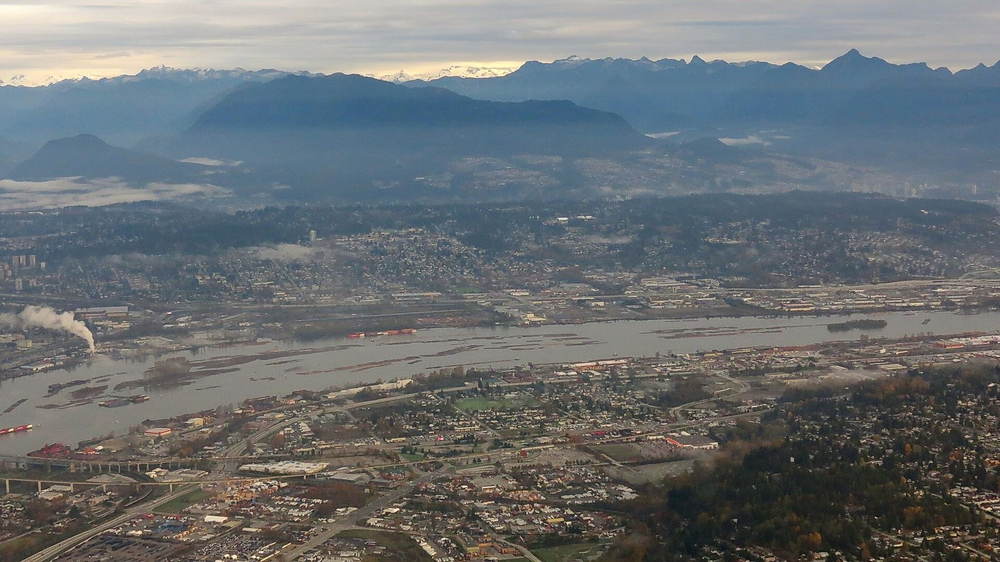

Newsroom
The water beat
Campaign updates, Coalition releases, and the B.C. water stories that matter — gathered in one place, refreshed automatically.
Loading the latest…
The clipping file
Reading the water crisis, story by story
A curated archive of the coverage that documents B.C.’s water emergency — and the people responding to it.
Drought & scarcity
Vancouver Island snowpack at 0% normal levels for June — CHEK News
No sprinkling in North Okanagan under historic water restrictions — Vernon Morning Star
Lowest-ever Osoyoos Lake levels likely to remain until spring — Times Chronicle
A drought emergency looms in Dawson Creek — The Tyee
Metro Vancouver is running out of drinking water — and the solutions are interesting — CBC News
Life in the age of drought — Maclean’s
Floods, fires & climate
Why B.C. is flooding — again — The Narwhal
Clear-cut logging can dramatically increase flood risk — The Conversation
B.C.’s flood prevention promises remain unfulfilled — The Tyee
Why logging isn’t the solution to B.C.’s wildfire crisis — The Tyee
Loss of B.C. wetlands can amplify extreme weather — The Weather Network
Enforcement & industry
Industries pay much less for water in B.C., report finds — The Tyee
As water dries up in northeast B.C., some want industrial users paying more — CBC News
Fracking’s water demand soared in drought-plagued northeast B.C. — The Tyee
AI data centres use vast amounts of water — gauging how much is murky — CBC News
Recycling company fined $454,000 for water contamination of river — Vancouver Sun
A decade after disastrous breach, Mount Polley tailings dam could get even bigger — The Narwhal
B.C. halts plans to make polluters pay for cleanup costs — The Tyee
Salmon & living waters
Snuneymuxw First Nation saves young salmon as Nanaimo River side channels dry up — CHEK News
Coquitlam River records historic return of sockeye salmon — Tri-Cities Dispatch
Late-June Somass River sockeye run brings abundance to First Nations — CHEK News
Beavers disappeared from syilx territories — could imitating their habitats bring them back? — The Narwhal
$1.3M salmon restoration effort in Nootka Sound — Ha-Shilth-Sa
Solutions & voices
Opinion: Drought is here. Why aren’t we acting like it? — Vancouver Sun
Opinion: B.C. needs local watershed boards to avoid water wars — Vancouver Sun
Coree Tull: Why B.C.’s rivers and watersheds should be a priority — The Province
Creating watershed security through collaborative leadership — Vernon Morning Star
B.C.’s water challenges can benefit from small-scale solutions — Business in Vancouver
Spotted a story we should add? Tell us.